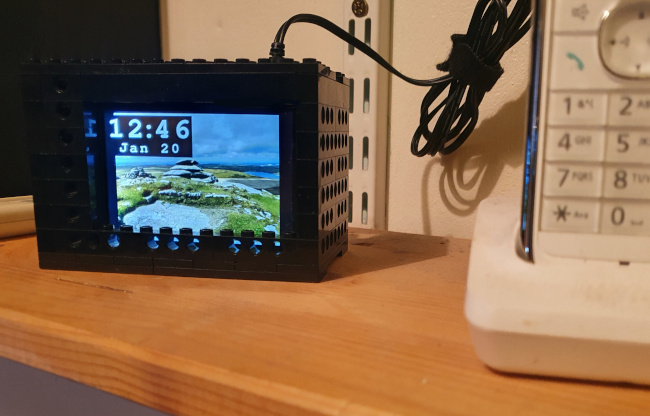
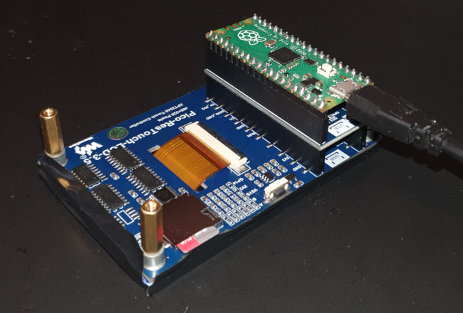

pico-photo-clock: an easy-to-construct Pi Pico desktop photo clock
 This article describes the design of a photo clock using a Raspberry
Pi Pico, a Waveshare 320x480 LCD display, a Waveshare real-time
clock, and some Lego. It displays photos in JPEG format from an
SD card. No soldering or electronic construction is
required -- the components, like the Lego, all push together.
The Waveshare LCD panel has a built-in SD card slot, already wired
to one of the Pico's SPI buses. I've given a general
description of the Waveshare LCD
in another article.
This article describes the design of a photo clock using a Raspberry
Pi Pico, a Waveshare 320x480 LCD display, a Waveshare real-time
clock, and some Lego. It displays photos in JPEG format from an
SD card. No soldering or electronic construction is
required -- the components, like the Lego, all push together.
The Waveshare LCD panel has a built-in SD card slot, already wired
to one of the Pico's SPI buses. I've given a general
description of the Waveshare LCD
in another article.

I wrote the software in C, using the Pico C SDK. It is available, along with a compiled binary, from my GitHub repository. The same software could, in pinciple, be used for other displays based on the ILI9488 LCD controller and the DS3231 real-time clock, but the Waveshare parts all fit together nicely. To be frank, although my software does work -- and the clock is sitting on my office shelf as I write this -- it's really intended to be a starting point for development, rather than a finished product.
Construction
The photo below shows, from bottom to top, the LCD panel, the real-time clock, and the Pico. Note that, with the Pico in place, there's no way to get to the backup battery of the clock module. However, it's claimed to last for three years.
For a completely soldering-free construction, you might need a USB right-angle adapter to route the USB cable in a more convenient direction to fit in a housing.
I've applied some thick rubber tape around the edge of the LCD panel, to prevent light leakage from the backlight LED, which is considerable. Depending on the housing you use, this leakage may not be a problem.
I'm not going to describe how to assemble the Lego -- I assume that, if you have Lego, you know how to use it. Or your kids do.

Programming
The Waveshare LCD module presents a significant programming challenge. It's not that it's difficult to interface -- on the contrary, it's trivial. The problem is that it's very slow to update on a pixel-by-pixel basis, and it has much more built-in RAM than the Pico does. For speed, the LCD has to be updated in blocks, but the size of the block is limited by the Pico's RAM. Thus the way the screen is updated has to be based on a rather complicated balance between speed and memory usage.
This is why the time/date display occupies its own box on the screen, rather than being merged with the photo. There simply isn't enough RAM in the Pico to get the background and the text into memory at the same time, for processing purposes. The processing could be done in the LCD controller's RAM but, rather irritatingly, the Waveshare module does not provide any way to read the controller RAM (the ILI9488 does expose a way to do this, butbut th necessary controller pins aren't wired to anything).
I thought it was very important to use proper, anti-aliased fonts for the time/date display, rather than crude bitmaps. To do this, allowing for the limited storage of the Pico, I store the font glyphs pre-rendered in JPEG format.
Progamming the DS3231 in C is straightforward -- it's just an I2C device that either reads or writes a compressed data packet carrying all the time and date fields together. This device is imminently suitable for a microcontroller application, because the time and data are managed internally, in decimal format. The module knows how many days are in a month, and when the leap years are. It doesn't handle daylight savings time, unfortunately -- this would require a way to set the region, and a substantial timezone database. At present, my software doesn't handle this either. It would be easy to do for a specific region, but to be general-purpose I'd have to embed a timezone database, and find a way to keep it up to date.
Handling the SD card is the biggest programming challenge. Not only is the card's SPI interface rather complicated -- particularly with error checking enabled -- but the program also has to interpret the filesystem. I'm only supporting FAT/exFAT filesystems, but that isn't really a limitation: it's how most SD cards are supplied. Fortunately, there are well-established open-source libraries for handling FAT filesystems.
Limitations
- No automatic handling of daylight savings changes.
- There is no user interface. To change the data or time, you have to plug the unit into a computer and run a command using a terminal emulator. I don't find this inconvenient enough to go to the trouble of writing a user interface, although the LCD module has a touch digitizer.
- Screen updates are slow. It takes about three seconds to draw a JPEG file on the screen.
- JPEGs have to be pre-formatted to fit the screen. The source code bundle has a Perl script for batch-formatting images on Linux. The Pico has neither the RAM nor the processing power to scale JPEG images at runtime.
- The finished unit consumes about half a watt. That's trivial compared to a computer -- even a Raspberry Pi -- but it's not nothing. Still, it's very low compared to proprietary 'digital photo frame' units, which often consume 10 watts. A significant part of the power consumption is from the backlight LED, which could conceivably be turned off or dimmed at certain times.
Further work
- Add a PIR module, so that the display can be turned off when there's nobody nearby to see it.
- Provide a way to change the date or time without creating a full user interface. One approach might be to read a set time from a file on the SD card. You'd write a time a little ahead of the current time, insert the SD card, then switch on the clock unit a just the right time. It would be less convenient than a full user interface, but only take half an hour to implement.
- Automatic adjustment for daylight savings. There probably isn't space in the Pico's flash for a full timezone database, but a specific zone could be selected at build time.
- Display sunrise, sunset, phase of the moon, etc. This also would require timezone information, plus geographical data.
- Add a barometric pressure sensor, and use it to provide a crude weather forecast
- Build a proper case, if you don't like the Lego aesthetic.